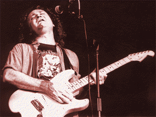

(Из пресс-релиза "ALLIGATOR")
Меня кто-то спрашивал, сколько я собираюсь этим заниматься. В рок-н-ролльной группе, если у тебя выпали волосы - тебе конец. В блюзе, когда начинаешь лысеть, можешь потребовать еще по 500$ за концерт. И я готов ждать столько, сколько ждала Bonnie RAITT... Но не столько, сколько John Lee HOOKER!
(Из онлайнового интервью HPI, 1998)

- Ничего плохого нет в том, чтобы оставаться "любителем". Вообще-то, самую лучшую свою музыку я делаю, когда мне не платят. А если вы спрашиваете, как жить, играя музыку - то это да, большой шаг. Мой совет тут один: не жать на это дело, пусть все само произойдет.Очень важно, чтыобы люди приходили своим присутствием поддержать концерты в клубах. Клубные концерты - это хлеб блюзовых исполнителей. Не стоит их упускать хотя бы потому, что эти концерты - именно то, что блюзовые музыканты делают лучше всего: чем меньше зал, тем лучше контакт на концерте.
Я - совсем самоучка, правда! Я играл под альбомы Freddy KING, Otis RUSH и MAGIC SAM. Я сильно подозреваю, что они и сами были самоучками!
С помню, как Buddy GUY говорил, что нужно чествовать блюзмэнов и нести цветы им самим, а не потом - на их могилы. (Обыгрываются строки Champion Jack DUPREE "Bring Me Flowers While I'm Living, Don't Bring Them To My Grave" - "Дари мне цветы, пока я живу, не надо потом нести их мне на могилу".) Если бы я не пошел на тот концерт, который оказался частью последнего тура HOWLIN' WOLF, я бы его вообще никогда не увидел. Старые блюзмэны - это то, что у нас в Америке ближе всего к понятию "королевская династия". Они - наша американская королевская семья, и мы обязаны быть, когда они требуют нашего присутствия при дворе!
(из THE CHARLOTTE OBSERVER May 8, 1992):
Я из тех, кто родился сорокалетним - в отношении музыкальных вкусов, если это можно понять. Я слишком стар, чтобы быть рок-звездой, и слишком молод, чтобы быть звездой блюза. Я думаю, моя музыка слишком рокова для блюзового сборища, и слишком блюзовая - для рок-толпы.